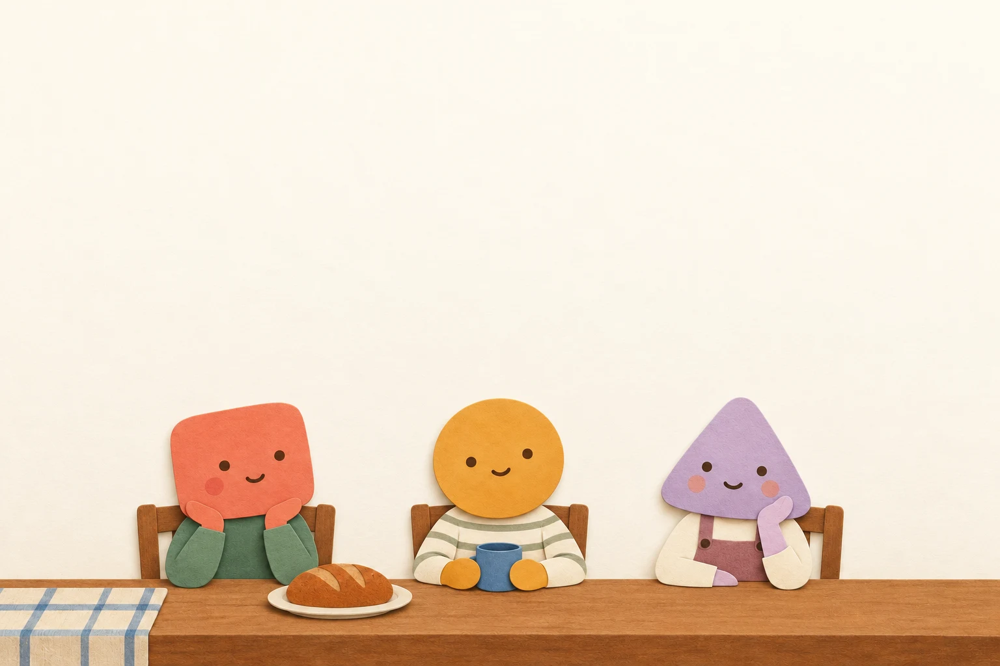

You, to Balloonist
0balloons arranged

An original scene, lettered live.Select a balloon to read.Airy layout
Read it
in order.
A conversation has a rhythm. Follow the numbers, then follow each tail back to its voice.
A replay of an authored layout. Every line below belongs to this scene.